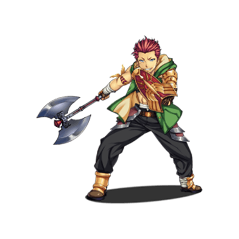

RPG TKOOL MZ HELP
RPGツクールMZとは
ゲーム操作の改良
RPGツクールMZはゲームプレイヤー視点の機能も向上しました。制作したゲームの魅力がより伝わりやすくなります。
スマホ対応UIの強化
スマートフォンをはじめ、タッチ操作でもより手軽に遊べるように、UIの改良が実装されました。
- PC/スマホ兼用の最適化されたメニューの実装
- ウィンドウのスワイプによるスクロール機能
- バトル時にタッチした対象を選択可能
タッチ操作に活用できる公式プラグインも用意されています。よりタッチ操作を主体にしたゲームの制作が可能です。
詳しくは［資料集］→［公式プラグインの使い方］をご覧ください。
オートセーブ機能
1番上のセーブ枠がオートセーブのスロットとなり、戦闘終了時及び場所移動後に自動セーブが行われます。何らかの理由でゲームが終了した場合も、プレイヤーはオートセーブから再開できます。
オートセーブ機能は［データベース］→［システム1］の［オプション］の項目で設定で無効にすることもできます。
［ゲームID］による作品の判別
RPGツクールMZではゲームIDにより、作品の判別ができるようになりました。ブラウザ公開のゲームを更新する際、ゲームタイトルを変更した場合もセーブデータを引き継ぐことができます。
ゲームIDは［データベース］→［システム2］→［高度な設定］で確認できます。